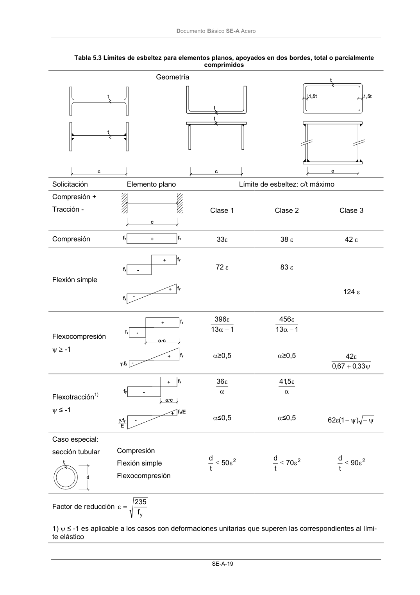

DB-SE-A · Página 21 · versión 2007-10-23
SHA256: 9ed9ea694aabfbda3bfbbef40dfe9223fde05d13c35bc2ba9751e5a96a22a64f · página física 21 de 168 · métodos de encabezado
solo si están cotejados.
Formatos: Markdown · JSON de bloques · PDF p. 21 · imagen PNG
Documento Básico SE-A Acero SE-A-19 Tabla 5.3 Límites de esbeltez para elementos planos, apoyados en dos bordes, total o parcialmente comprimidos Geometría Solicitación Elemento plano Límite de esbeltez: c/t máximo Compresión + Tracción - Clase 1 Clase 2 Clase 3 Compresión 33ε 38 ε 42 ε Flexión simple 72 ε 83 ε 124 ε Flexocompresión ψ ≥ -1 1 13 396 − α ε α≥0,5 1 13 456 − α ε α≥0,5 ψ + ε 33 ,0 67 ,0 42 Flexotracción1) ψ ≤ -1 α ε 36 α≤0,5 α ε 5, 41 α≤0,5 ψ − ψ − ε ) 1 ( 62 Caso especial: sección tubular Compresión Flexión simple Flexocompresión 2 50 t d ε ≤ 2 70 t d ε ≤ 2 90 t d ε ≤ Factor de reducción yf 235 = ε 1) ψ ≤ -1 es aplicable a los casos con deformaciones unitarias que superen las correspondientes al lími- te elástico
